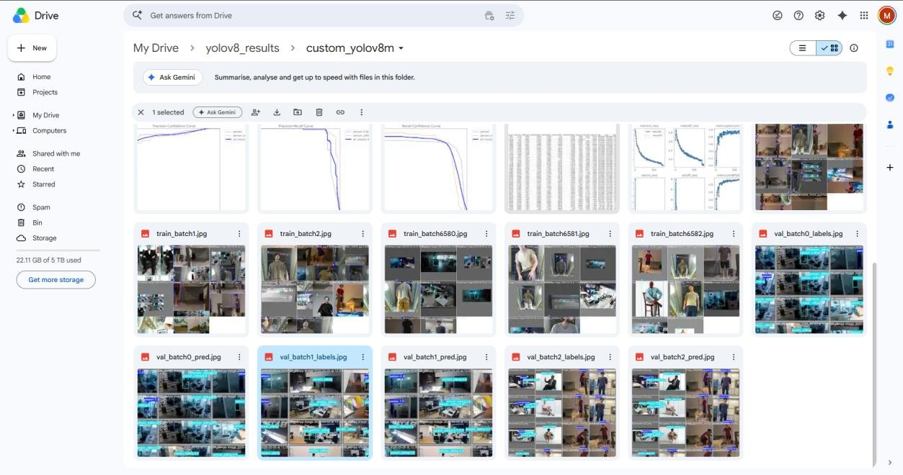
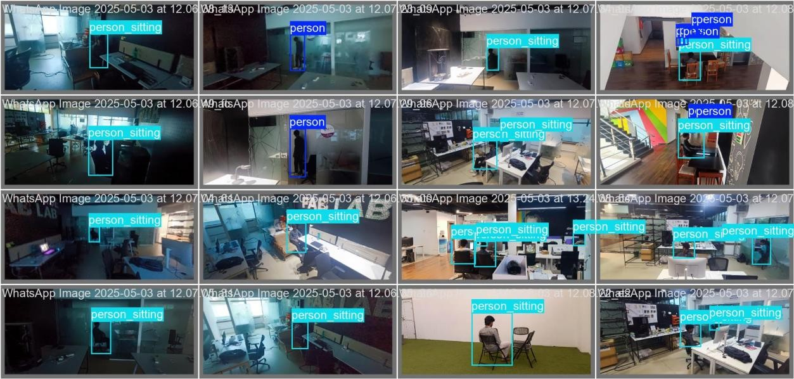
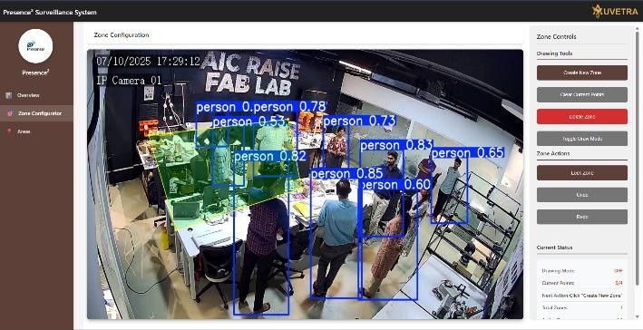
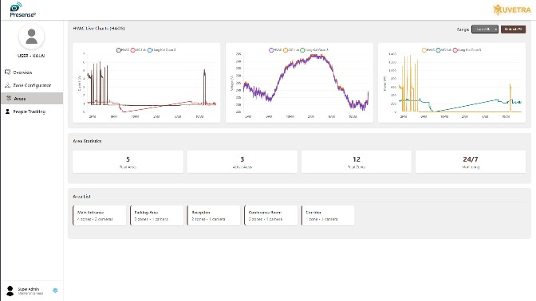

We built and deployed a real-time, zone-based occupancy detection and load-control platform that runs entirely on the customer's premises, with no cloud, using the CCTV cameras they already had. See how we built and deployed it ↓
To develop an edge-native computer vision platform capable of real-time zone-based occupancy detection and intelligent load control — operating entirely on-premises, without reliance on cloud infrastructure. The system leverages already-deployed CCTV cameras (accessed via RTSP streams), eliminating the need for new camera hardware investment.
Eliminated cloud dependency. Ran custom-trained models directly on GPU-enabled edge servers (NVIDIA Jetson Nano or equivalent), enabling sub-second inference latency.
Reused existing CCTV. Ingested camera streams via RTSP, removing the cost and complexity of new hardware deployment.
Replaced motion sensors with configurable zones. Administrators define custom detection zones through an intuitive Zone Configurator UI, enabling granular spatial control.
Connected vision to building automation. Integrated seamlessly with BACnet/IP and KNX/IP building automation devices, enabling direct load control (lighting, HVAC) triggered by vision events.
Trained robust models. Used a dataset of ~63,000 annotated images with YOLO and MobileNet SSD, achieving robust detection across diverse lighting and occupancy densities.
Enabled hardware-agnostic deployment. Runs on any GPU-capable edge device, offering cost-flexibility across small and large-scale installations.
Building an accurate occupancy detection model required a purpose-built dataset and a structured training pipeline tailored to real indoor environments.
I captured footage directly from already-deployed CCTV cameras via RTSP streams — covering office spaces, cafeteria areas, corridors and digital signage zones under varying lighting and occupancy densities. Frames were extracted across different times of day (morning, peak hours, evening) to capture the full range of real-world occupancy patterns, including empty zones, single occupants, dense crowds, partial occlusions and mixed lighting. In total, ~63,000 annotated images were curated for training.
Each image was annotated with bounding boxes and class labels (person / no-person) using structured labeling tools, following a consistent schema. Data augmentation — flipping, brightness variation, cropping and noise injection — improved generalization, and the dataset was split into training, validation and test sets for rigorous evaluation.
I trained and benchmarked two architectures: YOLO for high-speed single-shot detection, and MobileNet SSD for lightweight inference on constrained hardware. YOLO was chosen as the primary model for real-time throughput; MobileNet SSD served as a fallback for low-power deployments like the Jetson Nano. Models were optimized post-training with NVIDIA TensorRT, and iterative retraining incorporated edge cases observed in live RTSP feeds.


I deployed the platform across three distinct real-world use cases:
Deployed in IT workspaces and office cafeterias to monitor real-time occupancy throughout the day — identifying peak usage periods and highlighting available free spaces so facility managers can optimize space allocation, plan cleaning and enforce capacity limits without manual headcounts.
Connected the vision engine directly to building automation via BACnet/IP and KNX/IP to control lighting and HVAC based on detected occupancy. When a zone is vacant, connected loads are automatically dimmed or switched off — delivering measurable energy savings with zero manual intervention and no cloud round-trip latency.
Monitors foot traffic in front of digital display boards — counting people who pass by or stop to view, and calculating individual dwell time — giving advertisers quantifiable metrics on reach, engagement and peak viewing windows.
The platform runs in production across live deployments, delivering a real-time detection console and an energy-usage dashboard driven entirely by on-premise inference.


We built the whole platform in-house (dataset, models, pipeline and dashboards) and deployed it in offices, cafeterias and digital-signage sites.
Discovery. Worked with facility teams to pin down what they actually needed: peak-hour and free-space visibility, automatic lighting and HVAC savings, and audience metrics for display boards.
Fit to the customer's site. Reused cameras already on the wall, kept all video on-premises, and connected to the BACnet/IP and KNX/IP building systems they already had rather than replacing them.
Iterated from the field. Retrained the models on edge cases seen in live RTSP feeds, and kept a MobileNet SSD fallback for low-power sites.
Outcome. Running in production across three use cases, with sub-second inference entirely on-site.